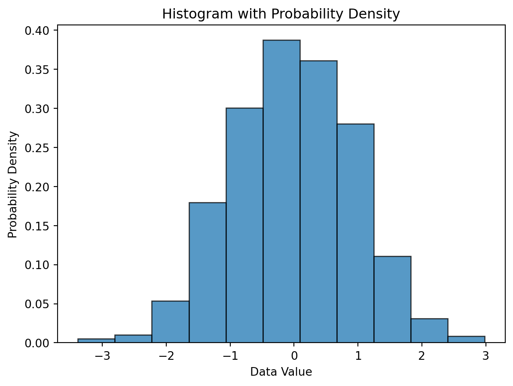
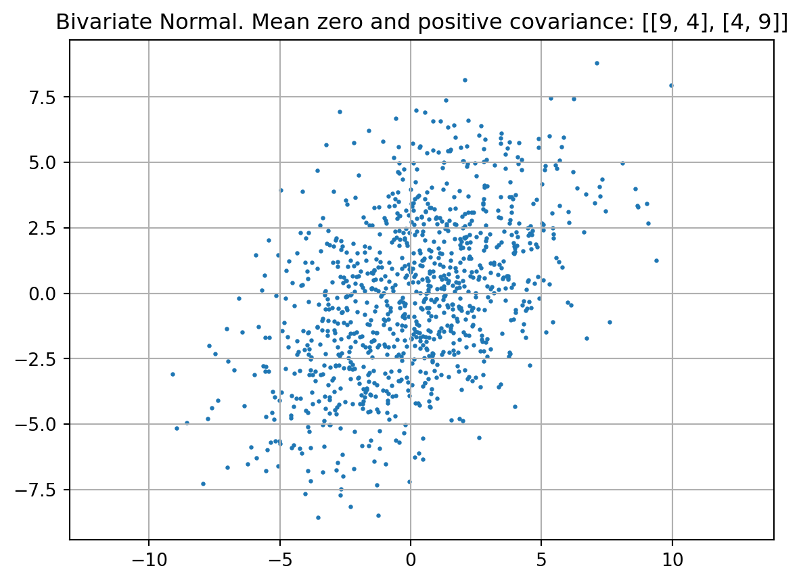

This chapter covers basic statistical concepts, namely descriptive statistics, probability distributions, and hypothesis testing. These concepts are fundamental to understanding data and making informed decisions based on data analysis. The chapter also introduces the concept of exploratory data analysis (EDA), data preprocessing (Principal Component Analysis), and data visualization techniques.
18.1 Exploratory Data Analysis
18.1.1 Histograms
Creating a histogram and calculating the probabilities from a dataset can be approached with scientific precision
Data Collection: Obtain the dataset you wish to analyze. This dataset could represent any quantitative measure, such to examine its distribution.
Decide on the Number of Bins: The number of bins influences the histogram’s granularity. There are several statistical rules to determine an optimal number of bins:
Square-root rule: suggests using the square root of the number of data points as the number of bins.
Sturges’ formula: \(k = 1 + 3.322 \log_{10}(n)\), where \(n\) is the number of data points and \(k\) is the suggested number of bins.
Freedman-Diaconis rule: uses the interquartile range (IQR) and the cube root of the number of data points \(n\) to calculate bin width as \(2 \dfrac{IQR}{n^{1/3}}\).
Determine Range and Bin Width: Calculate the range of data by subtracting the minimum data point value from the maximum. Divide this range by the number of bins to determine the width of each bin.
Allocate Data Points to Bins: Iterate through the data, sorting each data point into the appropriate bin based on its value.
Draw the Histogram: Use a histogram to visualize the frequency or relative frequency (probability) of data points within each bin.
Calculate Probabilities: The relative frequency of data within each bin represents the probability of a randomly selected data point falling within that bin’s range.
Below is a Python script that demonstrates how to generate a histogram and compute probabilities using the matplotlib library for visualization and numpy for data manipulation.
import numpy as npimport matplotlib.pyplot as plt# Sample data: Randomly generated for demonstrationdata = np.random.normal(0, 1, 1000) # 1000 data points with a normal distribution# Step 2: Decide on the number of binsnum_bins =int(np.ceil(1+3.322* np.log10(len(data)))) # Sturges' formula# Step 3: Determine range and bin width -- handled internally by matplotlib# Steps 4 & 5: Sort data into bins and draw the histogramfig, ax = plt.subplots()n, bins, patches = ax.hist(data, bins=num_bins, density=True, alpha=0.75, edgecolor='black')# Calculate probabilities (relative frequencies) manually, if neededbin_width = np.diff(bins) # np.diff finds the difference between adjacent bin boundariesprobabilities = n * bin_width # n is already normalized to form a probability density if `density=True`# Adding labels and title for clarityax.set_xlabel('Data Value')ax.set_ylabel('Probability Density')ax.set_title('Histogram with Probability Density')
Text(0.5, 1.0, 'Histogram with Probability Density')
(a) Histogram with Probability Density

(b)
Figure 18.1
for i, prob inenumerate(probabilities):print(f"Bin {i+1} Probability: {prob:.4f}")# Ensure probabilities sum to 1 (or very close, due to floating-point arithmetic)print(f"Sum of probabilities: {np.sum(probabilities)}")
Bin 1 Probability: 0.0060
Bin 2 Probability: 0.0170
Bin 3 Probability: 0.0590
Bin 4 Probability: 0.1190
Bin 5 Probability: 0.1950
Bin 6 Probability: 0.2450
Bin 7 Probability: 0.1830
Bin 8 Probability: 0.1210
Bin 9 Probability: 0.0360
Bin 10 Probability: 0.0140
Bin 11 Probability: 0.0050
Sum of probabilities: 1.0
This code segment goes through the necessary steps to generate a histogram and calculate probabilities for a synthetic dataset. It demonstrates important scientific and computational practices including binning, visualization, and probability calculation in Python.
Key Points:
The histogram represents the distribution of data, with the histogram’s bins outlining the data’s spread and density.
The option density=True in ax.hist() normalizes the histogram so that the total area under the histogram sums to 1, thereby converting frequencies to probability densities.
The choice of bin number and width has a significant influence on the histogram’s shape and the insights that can be drawn from it, highlighting the importance of selecting appropriate binning strategies based on the dataset’s characteristics and the analysis objectives.
What happens when we use smaller bins in a histogram? The histogram becomes more detailed, revealing the distribution of data points with greater precision. However, as the bin size decreases, the number of data points within each bin may decrease, leading to sparse or empty bins. This sparsity can make it challenging to estimate probabilities accurately, especially for data points that fall within these empty bins.
Advantages, when using a probability distribution, include:
Blanks can be filled
Probabilities can be calculated
Parameters are sufficient to describe the distribution, e.g., mean and variance for the normal distribution
Probability distributions offer a powerful solution to the challenges posed by limited data in estimating probabilities. When data is scarce, constructing a histogram to determine the probability of certain outcomes can lead to inaccurate or unreliable results due to the lack of detail in the dataset. However, collecting vast amounts of data to populate a histogram for more precise estimates can often be impractical, time-consuming, and expensive.
A probability distribution is a mathematical function that provides the probabilities of occurrence of different possible outcomes for an experiment. It is a more efficient approach to understanding the likelihood of various outcomes than relying solely on extensive data collection. For continuous data, this is often represented graphically by a smooth curve.
Discrete probability distributions are essential tools in statistics, providing a mathematical foundation to model and analyze situations with discrete outcomes. Histograms, which can be seen as discrete distributions with data organized into bins, offer a way to visualize and estimate probabilities based on the collected data. However, they come with limitations, especially when data is scarce or when we encounter gaps in the data (blank spaces in histograms). These gaps can make it challenging to accurately estimate probabilities.
A more efficient approach, especially for discrete data, is to use mathematical equations—particularly those defining discrete probability distributions—to calculate probabilities directly, thus bypassing the intricacies of data collection and histogram interpretation.
18.3.1 Bernoulli Distribution
The Bernoulli distribution, named after Swiss scientist Jacob Bernoulli, is a discrete probability distribution, which takes value \(1\) with success probability \(p\) and value \(0\) with failure probability \(q = 1-p\). So if \(X\) is a random variable with this distribution, we have: \[
P(X=1) = 1-P(X=0) = p = 1-q.
\]
18.3.2 Binomial Distribution
The Binomial Distribution is a prime example of a discrete probability distribution that is particularly useful for binary outcomes (e.g., success/failure, yes/no, pumpkin pie/blueberry pie). It leverages simple mathematical principles to calculate the probability of observing a specific number of successes (preferred outcomes) in a fixed number of trials, given the probability of success in each trial.
Example 18.1 (Pie Preference) Consider a scenario from “StatLand” where 70% of people prefer pumpkin pie over blueberry pie. The question is: What is the probability that, out of three people asked, the first two prefer pumpkin pie and the third prefers blueberry pie?
Using the concept of the Binomial Distribution, the probability of such an outcome can be calculated without the need to layout every possible combination by hand. This process not only simplifies calculations but also provides a clear and precise method to determine probabilities in scenarios involving discrete choices. We will use Python to calculate the probability of observing exactly two out of three people prefer pumpkin pie, given the 70% preference rate:
from scipy.stats import binomn =3# Number of trials (people asked)p =0.7# Probability of success (preferring pumpkin pie)x =2# Number of successes (people preferring pumpkin pie)# Probability calculation using Binomial Distributionprob = binom.pmf(x, n, p)print(f"The probability that exactly 2 out of 3 people prefer pumpkin pie is: {prob:.3f}")
The probability that exactly 2 out of 3 people prefer pumpkin pie is: 0.441
This code uses the binom.pmf() function from scipy.stats to calculate the probability mass function (PMF) of observing exactly x successes in n trials, where each trial has a success probability of p.
A Binomial random variable is the sum of \(n\) independent, identically distributed Bernoulli random variables, each with probability \(p\) of success. We may indicate a random variable \(X\) with Bernoulli distribution using the notation \(X \sim \mathrm{Bi}(1,\theta)\). Then, the notation for the Binomial is \(X \sim \mathrm{Bi}(n,\theta)\). Its probability and distribution functions are, respectively, \[
p_X(x) = {n\choose x}\theta^x(1-\theta)^{n-x}, \qquad F_X(x) = \Pr\{X \le x\} = \sum_{i=0}^{x} {n\choose i}\theta^i(1-\theta)^{n-i}.
\]
The mean of the binomial distribution is \(\text{E}[X] = n\theta\). The variance of the distribution is \(\text{Var}[X] = n\theta(1-\theta)\) (see next section).
A process consists of a sequence of \(n\) independent trials, i.e., the outcome of each trial does not depend on the outcome of previous trials. The outcome of each trial is either a success or a failure. The probability of success is denoted as \(p\), and \(p\) is constant for each trial. Coin tossing is a classical example for this setting.
The binomial distribution is a statistical distribution giving the probability of obtaining a specified number of successes in a binomial experiment; written Binomial(n, p), where \(n\) is the number of trials, and \(p\) the probability of success in each.
Definition 18.1 (Binomial Distribution) The binomial distribution with parameters \(n\) and \(p\), where \(n\) is the number of trials, and \(p\) the probability of success in each, is \[\begin{equation}
p(x) = { n \choose k } p^x(1-p)^{n-x} \qquad x = 0,1, \ldots, n.
\end{equation}\] The mean \(\mu\) and the variance \(\sigma^2\) of the binomial distribution are \[\begin{equation}
\mu = np
\end{equation}\] and \[\begin{equation}
\sigma^2 = np(1-p).
\end{equation}\]
Note, the Bernoulli distribution is simply Binomial(1,p).
18.4 Continuous Distributions
Our considerations regarding probability distributions, expectations, and standard deviations will be extended from discrete distributions to continuous distributions. One simple example of a continuous distribution is the uniform distribution. Continuous distributions are defined by probability density functions.
18.4.1 Distribution functions: PDFs and CDFs
The density for a continuous distribution is a measure of the relative probability of “getting a value close to \(x\).” Probability density functions \(f\) and cumulative distribution function \(F\) are related as follows. \[\begin{equation}
f(x) = \frac{d}{dx} F(x)
\end{equation}\]
18.5 Background: Expectation, Mean, Standard Deviation
The distribution of a random vector is characterized by some indexes. These are the expectation, the mean, and the standard deviation. The expectation is a measure of the central tendency of a random variable, while the standard deviation quantifies the spread of the distribution. These indexes are essential for understanding the behavior of random variables and making predictions based on them.
Definition 18.2 (Random Variable) A random variable \(X\) is a mapping from the sample space of a random experiment to the real numbers. It assigns a numerical value to each outcome of the experiment. Random variables can be either:
Discrete: If \(X\) takes on a countable number of distinct values.
Continuous: If \(X\) takes on an uncountable number of values.
Mathematically, a random variable is a function \(X: \Omega \rightarrow \mathbb{R}\), where \(\Omega\) is the sample space.
Definition 18.3 (Probability Distribution) A probability distribution describes how the values of a random variable are distributed. It is characterized for a discrete random variable \(X\) by the probability mass function (PMF) \(p_X(x)\) and for a continuous random variable \(X\) by the probability density function (PDF) \(f_X(x)\).
Definition 18.4 (Probability Mass Function (PMF))\(p_X(x) = P(X = x)\) gives the probability that \(X\) takes the value \(x\).
Definition 18.5 (Probability Density Function (PDF):)\(f_X(x)\) is a function such that for any interval \([a, b]\), the probability that \(X\) falls within this interval is given by the integral \(\int_a^b f_X(x) \mathrm{d}x\).
The distribution function must satisfy: \[
\sum_{x \in D_X} p_X(x) = 1
\] for discrete random variables, where \(D_X\) is the domain of \(X\) and \[
\int_{-\infty}^{\infty} f_X(x) \mathrm{d}x = 1
\] for continuous random variables.
With these definitions in place, we can now introduce the definition of the expectation, which is a fundamental measure of the central tendency of a random variable.
Definition 18.6 (Expectation) The expectation or expected value of a random variable \(X\), denoted \(E[X]\), is defined as follows:
For a discrete random variable \(X\): \[
E[X] = \sum_{x \in D_X} x p_X(x) \quad \text{if $X$ is discrete}.
\]
For a continuous random variable \(X\): \[
E[X] = \int_{x \in D_X} x f_X(x) \mathrm{d}x \quad \text{if $X$ is continuous.}
\]
The mean, \(\mu\), of a probability distribution is a measure of its central tendency or location. That is, \(E(X)\) is defined as the average of all possible values of \(X\), weighted by their probabilities.
Example 18.2 (Expectation) Let \(X\) denote the number produced by rolling a fair die. Then \[
E(X) = 1 \times 1/6 + 2 \times 1/6 + 3 \times 1/6 + 4 \times 1/6 + 5 \times 1/6 + 6\times 1/6 = 3.5.
\]
Definition 18.7 (Sample Mean) The sample mean is an important estimate of the population mean. The sample mean of a sample \(\{x_i\}\) (\(i=1,2,\ldots,n\)) is defined as \[
\overline{x} = \frac{1}{n} \sum_i x_i.
\]
While both the expectation of a random variable and the sample mean provide measures of central tendency, they differ in their context, calculation, and interpretation.
The expectation is a theoretical measure that characterizes the average value of a random variable over an infinite number of repetitions of an experiment. The expectation is calculated using a probability distribution and provides a parameter of the entire population or distribution. It reflects the long-term average or central value of the outcomes generated by the random process.
The sample mean is a statistic. It provides an estimate of the population mean based on a finite sample of data. It is computed directly from the data sample, and its value can vary between different samples from the same population. It serves as an approximation or estimate of the population mean. It is used in statistical inference to make conclusions about the population mean based on sample data.
If we are trying to predict the value of a random variable \(X\) by its mean \(\mu = E(X)\), the error will be \(X-\mu\). In many situations it is useful to have an idea how large this deviation or error is. Since \(E(X-\mu) = E(X) -\mu = 0\), it is necessary to use the absolute value or the square of (\(X-\mu\)). The squared error is the first choice, because the derivatives are easier to calculate. These considerations motivate the definition of the variance:
Definition 18.8 (Variance) The variance of a random variable \(X\) is the mean squared deviation of \(X\) from its expected value \(\mu = E(X)\). \[\begin{equation}
Var(X) = E[ (X-\mu)^2].
\end{equation}\]
The variance is a measure of the spread of a distribution. It quantifies how much the values of a random variable differ from the mean. A high variance indicates that the values are spread out over a wide range, while a low variance indicates that the values are clustered closely around the mean.
Definition 18.9 (Standard Deviation) Taking the square root of the variance to get back to the same scale of units as \(X\) gives the standard deviation. The standard deviation of \(X\) is the square root of the variance of \(X\). \[\begin{equation}
sd(X) = \sqrt{Var(X)}.
\end{equation}\]
18.6 Distributions and Random Numbers in Python
Results from computers are deterministic, so it sounds like a contradiction in terms to generate random numbers on a computer. Standard computers generate pseudo-randomnumbers, i.e., numbers that behave as if they were drawn randomly.
Deterministic Random Numbers
Idea: Generate deterministically numbers that look (behave) as if they were drawn randomly.
18.6.1 Calculation of the Standard Deviation with Python
The function numpy.std returns the standard deviation, a measure of the spread of a distribution, of the array elements. The argument ddof specifies the Delta Degrees of Freedom. The divisor used in calculations is N - ddof, where N represents the number of elements. By default ddof is zero, i.e., std uses the formula \[
\sqrt{ \frac{1}{N} \sum_i \left( x_i - \bar{x} \right)^2 } \qquad \text{with } \quad \bar{x} = \sum_{i=1}^N x_i /N.
\]
Example 18.3 (Standard Deviation with Python) Consider the array \([1,2,3]\): Since \(\bar{x} = 2\), the following value is computed: \[ \sqrt{1/3 \times \left( (1-2)^2 + (2-2)^2 + (3-2)^2 \right)} = \sqrt{2/3}.\]
import numpy as npa = np.array([[1, 2, 3]])np.std(a)
np.float64(0.816496580927726)
The empirical standard deviation (which uses \(N-1\)), \(\sqrt{1/2 \times \left( (1-2)^2 + (2-2)^2 + (3-2)^2 \right)} = \sqrt{2/2}\), can be calculated in Python as follows:
np.std(a, ddof=1)
np.float64(1.0)
18.6.2 The Argument “axis”
When you compute np.std with axis=0, it calculates the standard deviation along the vertical axis, meaning it computes the standard deviation for each column of the array. On the other hand, when you compute np.std with axis=1, it calculates the standard deviation along the horizontal axis, meaning it computes the standard deviation for each row of the array. If the axis parameter is not specified, np.std computes the standard deviation of the flattened array, i.e., it calculates the standard deviation of all the elements in the array.
Example 18.4 (Axes along which the standard deviation is computed)
A = np.array([[1, 2], [3, 4]])A
array([[1, 2],
[3, 4]])
First, we calculate the standard deviation of all elements in the array:
np.std(A)
np.float64(1.118033988749895)
Setting axis=0 calculates the standard deviation along the vertical axis (column-wise):
np.std(A, axis=0)
array([1., 1.])
Finally, setting axis=1 calculates the standard deviation along the horizontal axis (row-wise):
Definition 18.11 (Variance (Continuous)) Variance can be calculated with \(\text{E}(X)\) and \[\begin{equation}
\text{E}(X^2) = \int_{-\infty}^\infty x^2 f(x) \, dx
\end{equation}\] as \[\begin{equation*}
\text{Var}(X) = \text{E}(X^2) - [ E(X)]^2.
\end{equation*}\]\(\Box\)
Definition 18.12 (Standard Deviation (Continuous)) Standard deviation can be calculated as \[\begin{equation*}
\text{sd}(X) = \sqrt{\text{Var}(X)}.
\end{equation*}\]\(\Box\)
Definition 18.13 (The Uniform Distribution) The probability density function of the uniform distribution is defined as: \[
f_X(x) = \frac{1}{b-a} \qquad \text{for $x \in [a,b]$}.
\]
Generate 10 random numbers from a uniform distribution between \(a=0\) and \(b=1\):
import numpy as np# Initialize the random number generatorrng = np.random.default_rng(seed=123456789)n =10x = rng.uniform(low=0.0, high=1.0, size=n)x
Generate 10,000 random numbers from a uniform distribution between 0 and 10 and plot a histogram of the numbers:
import numpy as npimport matplotlib.pyplot as plt# Initialize the random number generatorrng = np.random.default_rng(seed=123456789)# Generate random numbers from a uniform distributionx = rng.uniform(low=0, high=10, size=10000)# Plot a histogram of the numbersplt.hist(x, bins=50, density=True, edgecolor='black')plt.title('Uniform Distribution [0,10]')plt.xlabel('Value')plt.ylabel('Frequency')plt.show()
18.9 The Uniform Distribution
This variable is defined in the interval \([a,b]\). We write it as \(X \sim U[a,b]\). Its density and cumulative distribution functions are, respectively, \[
f_X(x) = \frac{I_{[a,b]}(x)}{b-a}, \quad\quad F_X(x) = \frac{1}{b-a}\int\limits_{-\infty}\limits^x I_{[a,b]}(t) \mathrm{d}t = \frac{x-a}{b-a},
\] where \(I_{[a,b]}(\cdot)\) is the indicator function of the interval \([a,b]\). Note that, if we set \(a=0\) and \(b=1\), we obtain \(F_X(x) = x\), \(x\)\(\in\)\([0,1]\).
A typical example is the following: the cdf of a continuous r.v. is uniformly distributed in \([0,1]\). The proof of this statement is as follows: For \(u\)\(\in\)\([0,1]\), we have \[\begin{eqnarray*}
\Pr\{F_X(X) \leq u\} &=& \Pr\{F_X^{-1}(F_X(X)) \leq F_X^{-1}(u)\} = \Pr\{X \leq F_X^{-1}(u)\} \\
&=& F_X(F_X^{-1}(u)) = u.
\end{eqnarray*}\] This means that, when \(X\) is continuous, there is a one-to-one relationship (given by the cdf) between \(x\)\(\in\)\(D_X\) and \(u\)\(\in\)\([0,1]\).
The has a constant density over a specified interval, say \([a,b]\). The uniform \(U(a,b)\) distribution has density \[\begin{equation}
f(x) =
\left\{
\begin{array}{ll}
1/(b-a) & \textrm{ if } a < x < b,\\
0 & \textrm{ otherwise}
\end{array}
\right.
\end{equation}\]
18.9.1 The Normal Distribution
A normally distributed random variable is a random variable whose associated probability distribution is the normal (or Gaussian) distribution. The normal distribution is a continuous probability distribution characterized by a symmetric bell-shaped curve.
The distribution is defined by two parameters: the mean \(\mu\) and the standard deviation \(\sigma\). The mean indicates the center of the distribution, while the standard deviation measures the spread or dispersion of the distribution.
This distribution is widely used in statistics and the natural and social sciences as a simple model for random variables with unknown distributions.
Definition 18.14 (The Normal Distribution) The probability density function of the normal distribution is defined as: \[
f_X(x) = \frac{1}{\sqrt{2\pi \sigma^2}} \exp\left(-\frac{1}{2} \left(\frac{x-\mu}{\sigma}\right)^2\right),
\tag{18.1}\] where: \(\mu\) is the mean; \(\sigma\) is the standard deviation.
To generate ten random numbers from a normal distribution, the following command can be used.
The standard deviation of normal distributed can be visualized in terms of the histogram of \(X\):
about 68% of the values will lie in the interval within one standard deviation of the mean
95% lie within two standard deviation of the mean
and 99.9% lie within 3 standard deviations of the mean.
18.9.3 Realizations of a Normal Distribution
Realizations of a normal distribution refers to the actual values that you get when you draw samples from a normal distribution. Each sample drawn from the distribution is a realization of that distribution.
Example 18.5 (Realizations of a Normal Distribution) If you have a normal distribution with a mean of 0 and a standard deviation of 1, each number you draw from that distribution is a realization. Here is a Python example that generates 10 realizations of a normal distribution with a mean of 0 and a standard deviation of 1:
import numpy as npmu =0sigma =1realizations = np.random.normal(mu, sigma, 10)print(realizations)
In this code, np.random.normal generates ten realizations of a normal distribution with a mean of 0 and a standard deviation of 1. The realizations array contains the actual values drawn from the distribution.
18.10 The Normal Distribution
A commonly encountered probability distribution is the normal distribution, known for its characteristic bell-shaped curve. This curve represents how the values of a variable are distributed: most of the observations cluster around the mean (or center) of the distribution, with frequencies gradually decreasing as values move away from the mean.
The normal distribution is particularly useful because of its defined mathematical properties. It is determined entirely by its mean (mu, \(\mu\)) and its standard deviation (sigma, \(\sigma\)). The area under the curve represents probability, making it possible to calculate the likelihood of a random variable falling within a specific range.
Example 18.6 (Normal Distribution: Estimating Probabilities) Consider we are interested in the heights of adults in a population. Instead of measuring the height of every adult (which would be impractical), we can use the normal distribution to estimate the probability of adults’ heights falling within certain intervals, assuming we know the mean and standard deviation of the heights.
import numpy as npimport matplotlib.pyplot as pltfrom scipy.stats import normmu =170# e.g., mu height of adults in cmsd =10# e.g., standard deviation of heights in cmheights = np.linspace(mu -3*sd, mu +3*sd, 1000)# Calculate the probability density function for the normal distributionpdf = norm.pdf(heights, mu, sd)# Plot the normal distribution curveplt.plot(heights, pdf, color='blue', linewidth=2)plt.fill_between(heights, pdf, where=(heights >= mu -2* sd) & (heights <= mu +2*sd), color='grey', alpha=0.5)plt.xlabel('Height (cm)')plt.ylabel('Probability Density')plt.show()
Figure 18.2: Normal Distribution Curve with Highlighted Probability Area. 95 percent of the data falls within two standard deviations of the mean.
This Python code snippet generates a plot of the normal distribution for adult heights, with a mean of 170 cm and a standard deviation of 10 cm. It visually approximates a histogram with a blue bell-shaped curve, and highlights (in grey) the area under the curve between \(\mu \pm 2 \times \sigma\). This area corresponds to the probability of randomly selecting an individual whose height falls within this range.
By using the area under the curve, we can efficiently estimate probabilities without needing to collect and analyze a vast amount of data. This method not only saves time and resources but also provides a clear and intuitive way to understand and communicate statistical probabilities.
Definition 18.15 (Normal Distribution) This variable is defined on the support \(D_X = \mathbb{R}\) and its density function is given by \[
f_X(x) = \frac{1}{\sqrt{2\pi\sigma^2}}\exp\left \{-\frac{1}{2\sigma^2}(x-\mu)^2 \right \}.
\] The density function is identified by the pair of parameters \((\mu,\sigma^2)\), where \(\mu\)\(\in\)\(\mathbb{R}\) is the mean (or location parameter) and \(\sigma^2 > 0\) is the variance (or dispersion parameter) of \(X\). \(\Box\)
The density function is symmetric around \(\mu\). The normal distribution belongs to the location-scale family distributions. This means that, if \(Z \sim N(0,1)\) (read, \(Z\) has a standard normal distribution; i.e., with \(\mu=0\) and \(\sigma^2=1\)), and we consider the linear transformation \(X = \mu + \sigma Z\), then \(X \sim N(\mu,\sigma^2)\) (read, \(X\) has a normal distribution with mean \(\mu\) and variance \(\sigma^2\)). This means that one can obtain the probability of any interval \((-\infty,x]\), \(x\)\(\in\)\(R\) for any normal distribution (i.e., for any pair of the parameters \(\mu\) and \(\sigma\)) once the quantiles of the standard normal distribution are known. Indeed \[\begin{eqnarray*}
F_X(x) &=& \Pr\left\{X \leq x \right\} = \Pr\left\{\frac{X-\mu}{\sigma} \leq \frac{x-\mu}{\sigma} \right\} \\
&=& \Pr\left\{Z \leq \frac{x-\mu}{\sigma}\right\} = F_Z\left(\frac{x-\mu}{\sigma}\right) \qquad x \in \mathbb{R}.
\end{eqnarray*}\] The quantiles of the standard normal distribution are available in any statistical program. The density and cumulative distribution function of the standard normal r.v.~at point \(x\) are usually denoted by the symbols \(\phi(x)\) and \(\Phi(x)\).
The standard normal distribution is based on the \[
\varphi(z) = \frac{1}{\sqrt{2\pi}} \exp \left(- \frac{z^2}{2} \right).
\tag{18.2}\]
An important application of the standardization introduced in Equation 18.2 reads as follows. In case the distribution of \(X\) is approximately normal, the distribution of X^{*} is approximately standard normal. That is \[\begin{equation*}
P(X\leq b) = P( \frac{X-\mu}{\sigma} \leq \frac{b-\mu}{\sigma}) = P(X^{*} \leq \frac{b-\mu}{\sigma})
\end{equation*}\] The probability \(P(X\leq b)\) can be approximated by \(\Phi(\frac{b-\mu}{\sigma})\), where \(\Phi\) is the standard normal cumulative distribution function.
If \(X\) is a normal random variable with mean \(\mu\) and variance \(\sigma^2\), i.e., \(X \sim \cal{N} (\mu, \sigma^2)\), then \[\begin{equation}
X = \mu + \sigma Z \textrm{ where } Z \sim \cal{N}(0,1).
\end{equation}\]
If \(Z \sim \cal{N}(0,1)\) and \(X\sim \cal{N}(\mu, \sigma^2)\), then \[\begin{equation*}
X = \mu + \sigma Z.
\end{equation*}\]
The probability of getting a value in a particular interval is the area under the corresponding part of the curve. Consider the density function of the normal distribution. It can be plotted using the following commands. The result is shown in Figure 18.3.
import numpy as npimport matplotlib.pyplot as pltfrom scipy.stats import normx = np.arange(-4, 4, 0.1)# Calculating the normal distribution's density function values for each point in xy = norm.pdf(x, 0, 1)plt.plot(x, y, linestyle='-', linewidth=2)plt.title('Normal Distribution')plt.xlabel('X')plt.ylabel('Density')plt.grid(True)plt.show()
Figure 18.3: Normal Distribution Density Function
The (CDF) describes the probability of “hitting” \(x\) or less in a given distribution. We consider the CDF function of the normal distribution. It can be plotted using the following commands. The result is shown in Figure 18.4.
import numpy as npimport matplotlib.pyplot as pltfrom scipy.stats import norm# Generating a sequence of numbers from -4 to 4 with 0.1 intervalsx = np.arange(-4, 4, 0.1)# Calculating the cumulative distribution function value of the normal distribution for each point in xy = norm.cdf(x, 0, 1) # mean=0, stddev=1# Plotting the results. The equivalent of 'type="l"' in R (line plot) becomes the default plot type in matplotlib.plt.plot(x, y, linestyle='-', linewidth=2)plt.title('Normal Distribution CDF')plt.xlabel('X')plt.ylabel('Cumulative Probability')plt.grid(True)plt.show()
Figure 18.4: Normal Distribution Cumulative Distribution Function
18.11 The Exponential Distribution
The exponential distribution is a continuous probability distribution that describes the time between events in a Poisson process, where events occur continuously and independently at a constant average rate. It is characterized by a single parameter, the rate parameter \(\lambda\), which represents the average number of events per unit time.
18.11.1 Standardization of Random Variables
To compare statistical properties of random variables which use different units, it is a common practice to transform these random variables into standardized variables.
Definition 18.16 (Standard Units) If a random variable \(X\) has expectation \(E(X) = \mu\) and standard deviation \(sd(X) = \sigma >0\), the random variable \[
X^{\ast} = (X-\mu)/\sigma
\] is called \(X\) in standard units. It has \(E(X^{\ast}) = 0\) and \(sd(X^{\ast}) =1\).
18.12 Covariance and Correlation
18.12.1 The Multivariate Normal Distribution
The multivariate normal, multinormal, or Gaussian distribution serves as a generalization of the one-dimensional normal distribution to higher dimensions. We will consider \(k\)-dimensional random vectors \(X = (X_1, X_2, \ldots, X_k)\). When drawing samples from this distribution, it results in a set of values represented as \(\{x_1, x_2, \ldots, x_k\}\). To fully define this distribution, it is necessary to specify its mean \(\mu\) and covariance matrix \(\Sigma\). These parameters are analogous to the mean, which represents the central location, and the variance (squared standard deviation) of the one-dimensional normal distribution introduced in Equation 18.1.
Definition 18.17 (The Multivariate Normal Distribution) The probability density function (PDF) of the multivariate normal distribution is defined as: \[
f_X(x) = \frac{1}{\sqrt{(2\pi)^n \det(\Sigma)}} \exp\left(-\frac{1}{2} (x-\mu)^T\Sigma^{-1} (x-\mu)\right),
\] where: \(\mu\) is the \(k \times 1\) mean vector; \(\Sigma\) is the \(k \times k\) covariance matrix. The covariance matrix \(\Sigma\) is assumed to be positive definite, so that its determinant is strictly positive.
In the context of the multivariate normal distribution, the mean takes the form of a coordinate within an \(k\)-dimensional space. This coordinate represents the location where samples are most likely to be generated, akin to the peak of the bell curve in a one-dimensional or univariate normal distribution.
Definition 18.18 (Covariance of two random variables) For two random variables \(X\) and \(Y\), the covariance is defined as the expected value (or mean) of the product of their deviations from their individual expected values: \[
\operatorname{cov}(X, Y) = \operatorname{E}{\big[(X - \operatorname{E}[X])(Y - \operatorname{E}[Y])\big]}
\]
For discrete random variables, covariance can be written as: \[
\operatorname{cov} (X,Y) = \frac{1}{n}\sum_{i=1}^n (x_i-E(X)) (y_i-E(Y)).
\]
The covariance within the multivariate normal distribution denotes the extent to which two variables vary together. The elements of the covariance matrix, such as \(\Sigma_{ij}\), represent the covariances between the variables \(x_i\) and \(x_j\). These covariances describe how the different variables in the distribution are related to each other in terms of their variability.
Example 18.7 (The Bivariate Normal Distribution with Positive Covariances)Figure 18.5 shows draws from a bivariate normal distribution with \(\mu = \begin{pmatrix}0 \\ 0\end{pmatrix}\) and \(\Sigma=\begin{pmatrix} 9 & 4 \\ 4 & 9 \end{pmatrix}\).

Figure 18.5: Bivariate Normal. Mean zero and covariance \(\Sigma=\begin{pmatrix} 9 & 4 \\ 4 & 9\end{pmatrix}\)
The covariance matrix of a bivariate normal distribution determines the shape, orientation, and spread of the distribution in the two-dimensional space.
The diagonal elements of the covariance matrix (\(\sigma_1^2\), \(\sigma_2^2\)) are the variances of the individual variables. They determine the spread of the distribution along each axis. A larger variance corresponds to a greater spread along that axis.
The off-diagonal elements of the covariance matrix (\(\sigma_{12}, \sigma_{21}\)) are the covariances between the variables. They determine the orientation and shape of the distribution. If the covariance is positive, the distribution is stretched along the line \(y=x\), indicating that the variables tend to increase together. If the covariance is negative, the distribution is stretched along the line \(y=-x\), indicating that one variable tends to decrease as the other increases. If the covariance is zero, the variables are uncorrelated and the distribution is axis-aligned.
In Figure 18.5, the variances are identical and the variables are correlated (covariance is 4), so the distribution is stretched along the line \(y=x\).
Figure 18.6: Bivariate Normal. Mean zero and covariance \(\Sigma=\begin{pmatrix} 9 & 4 \\ 4 & 9\end{pmatrix}\).
Example 18.8 (The Bivariate Normal Distribution with Mean Zero and Zero Covariances) The Bivariate Normal Distribution with Mean Zero and Zero Covariances \(\sigma_{12} = \sigma_{21} = 0\).
Figure 18.7: Bivariate Normal. Mean zero and covariance \(\Sigma=\begin{pmatrix} 9 & 0 \\ 0 & 9\end{pmatrix}\)
Example 18.9 (The Bivariate Normal Distribution with Mean Zero and Negative Covariances) The Bivariate Normal Distribution with Mean Zero and Negative Covariances \(\sigma_{12} = \sigma_{21} = -4\).
Figure 18.8: Bivariate Normal. Mean zero and covariance \(\Sigma=\begin{pmatrix} 9 & -4 \\ -4 & 9\end{pmatrix}\)
18.13 Covariance
In statistics, understanding the relationship between random variables is crucial for making inferences and predictions. Two common measures of such relationships are covariance and correlation. Covariance is a measure of how much two random variables change together. If the variables tend to show similar behavior (i.e., when one increases, the other tends to increase), the covariance is positive. Conversely, if they tend to move in opposite directions, the covariance is negative.
Definition 18.19 (Covariance) Covariance is calculated as:
Here, \(E[X]\) and \(E[Y]\) are the expected values (means) of \(X\) and \(Y\), respectively. Covariance has units that are the product of the units of \(X\) and \(Y\).
For a vector of random variables \(\mathbf{Y} = \begin{pmatrix} Y^{(1)}, \ldots, Y^{(n)} \end{pmatrix}^T\), the covariance matrix \(\Sigma\) encapsulates the covariances between each pair of variables:
The diagonal elements represent the variances, while the off-diagonal elements are the covariances.
18.14 Correlation
18.14.1 Definitions
Definition 18.20 ((Pearson) Correlation Coefficient) The Pearson correlation coefficient, often denoted by \(\rho\) for the population or \(r\) for a sample, is calculated by dividing the covariance of two variables by the product of their standard deviations.
where \(\text{Cov}(X, Y)\) is the covariance between variables \(X\) and \(Y\), and \(\sigma_X\) and \(\sigma_Y\) are the standard deviations of \(X\) and \(Y\), respectively.
Correlation, specifically the correlation coefficient, is a normalized measure of the linear relationship between two variables. It provides a value ranging from \(-1\) to \(1\), which is scale-free, making it easier to interpret:
\(-1\): Perfect negative correlation, indicating that as one variable increases, the other decreases.
\(0\): No correlation, indicating no linear relationship between the variables.
\(1\): Perfect positive correlation, indicating that both variables increase together.
The correlation matrix \(\Psi\) provides a way to quantify the linear relationship between multiple variables, extending the notion of the correlation coefficient beyond just pairs of variables. It is derived from the covariance matrix \(\Sigma\) by normalizing each element with respect to the variances of the relevant variables.
Definition 18.21 (The Correlation Matrix \(\Psi\)) Given a set of random variables \(X_1, X_2, \ldots, X_n\), the covariance matrix \(\Sigma\) is:
where \(\sigma_{ij} = \text{cov}(X_i, X_j)\) is the covariance between the \(i^{\text{th}}\) and \(j^{\text{th}}\) variables. The correlation matrix \(\Psi\) is then defined as:
The correlation matrix \(\Psi\) has the following properties:
The matrix \(\Psi\) is symmetric, meaning \(\rho_{ij} = \rho_{ji}\).
The diagonal elements are all 1, as \(\rho_{ii} = \frac{\sigma_{ii}}{\sigma_i \sigma_i} = 1\).
Each off-diagonal element is constrained between -1 and 1, indicating the strength and direction of the linear relationship between pairs of variables.
18.14.2 Computations
Example 18.10 (Computing a Correlation Matrix) Suppose you have a dataset consisting of three variables: \(X\), \(Y\), and \(Z\). You can compute the correlation matrix as follows:
Calculate the covariance matrix \(\Sigma\), which contains covariances between all pairs of variables.
Extract the standard deviations for each variable from the diagonal elements of \(\Sigma\).
Use the standard deviations to compute the correlation matrix \(\Psi\).
Suppose we have two sets of data points:
\(X = [1, 2, 3]\)
\(Y = [4, 5, 6]\)
We want to compute the correlation matrix \(\Psi\) for these variables. First, calculate the mean of each variable.
\[
\bar{X} = \frac{1 + 2 + 3}{3} = 2
\]
\[
\bar{Y} = \frac{4 + 5 + 6}{3} = 5
\]
Second, compute the covariance between \(X\) and \(Y\). The covariance is calculated as:
Thus, for these two variables, the correlation matrix indicates a perfect positive linear relationship (correlation coefficient of 1) between \(X\) and \(Y\).
18.14.3 The Outer-product and the np.outer Function
The function np.outer from the NumPy library computes the outer product of two vectors. The outer product of two vectors results in a matrix, where each element is the product of an element from the first vector and an element from the second vector.
Definition 18.22 (Outer Product) For two vectors \(\mathbf{a}\) and \(\mathbf{b}\), the outer product is defined in terms of their elements as:
Thus, np.outer creates a matrix with dimensions \(m \times n\), where \(m\) is the length of the first vector and \(n\) is the length of the second vector. The function is particularly useful in various mathematical and scientific computations where matrix representations of vector relationships are needed.
Example 18.12 (Computing the Covariance and the Correlation Matrix) The following Python code computes the covariance and correlation matrices using the NumPy library.
import numpy as npdef calculate_cov_corr_matrices(data, rowvar=False)->(np.array, np.array):""" Calculate the covariance and correlation matrices of the input data. Args: data (np.array): Input data array. rowvar (bool): Whether the data is row-wise or column-wise. Default is False (column-wise). Returns: np.array: Covariance matrix. np.array: Correlation matrix. Examples: >>> data = np.array([[1, 2, 3], [4, 5, 6], [7, 8, 9]]) >>> calculate_cov_corr_matrices(data) """ cov_matrix = np.cov(data, rowvar=rowvar) std_devs = np.sqrt(np.diag(cov_matrix))# check whether the standard deviations are zero# and throw an error if they areif np.any(std_devs ==0):raiseValueError("Correlation matrix cannot be computed,"+" because one or more variables have zero variance.") corr_matrix = cov_matrix / np.outer(std_devs, std_devs)return cov_matrix, corr_matrix
A = np.array([[0,1], [1,0]])print(f"Input matrix:\n{A}")Sigma, Psi = calculate_cov_corr_matrices(A)print(f"Covariance matrix:\n{Sigma}")print(f"Correlation matrix:\n{Psi}")
Definition 18.23 (Statistical Independence (Independence of Random Vectors)) Two random vectors are statistically independent if the joint distribution of the vectors is equal to the product of their marginal distributions.
This means that knowing the realization of one vector gives you no information about the realization of the other vector. This independence is a probabilistic concept used in statistics and probability theory to denote that two sets of random variables do not affect each other. Independence implies that all pairwise covariances between the components of the two vectors are zero, but zero covariance does not imply independence unless certain conditions are met (e.g., normality). Statistical independence is a stronger condition than zero covariance. Statistical independence is not related to the linear independence of vectors in linear algebra.
Example 18.13 (Covariance of Independent Variables) Consider a covariance matrix where variables are independent:
A = np.array([[1,-1],[2,0],[3,1],[4,0],[5,-1]])print(f"Input matrix:\n{A}")Sigma, Psi = calculate_cov_corr_matrices(A)print(f"Covariance matrix:\n{Sigma}")print(f"Correlation matrix:\n{Psi}")
Here, since the off-diagonal elements are 0, the variables are uncorrelated. \(X\) increases linearly, while \(Y\) alternates in a simple pattern with no trend that is linearly related to \(Y\).
Example 18.14 (Strong Correlation) For a covariance matrix with strong positive correlation:
A = np.array([[10,-1],[20,0],[30,1],[40,2],[50,3]])print(f"Input matrix:\n{A}")Sigma, Psi = calculate_cov_corr_matrices(A)print(f"Covariance matrix:\n{Sigma}")print(f"Correlation matrix:\n{Psi}")
This matrix indicates a perfect negative correlation where one variable increases as the other decreases.
18.14.5 Pearson’s Correlation
Video: [Pearson’s Correlation, Clearly Explained]
18.14.6 Interpreting the Correlation: Correlation Squared
Rummel (1976) describes how to interpret correlations as follows:
Seldom, indeed, will a correlation be zero or perfect. Usually, the covariation between things will be something like \(.56\) or \(-.16\). Clearly \(.56\) is positive, indicating positive covariation; \(-.16\) is negative, indicating some negative covariation. Moreover, we can say that the positive correlation is greater than the negative. But, we require more than. If we have a correlation of \(.56\) between two variables, for example, what precisely can we say other than the correlation is positive and \(.56\)? The squared correlation describes the proportion of variance in common between the two variables. If we multiply this by 100 we then get the percent of variance in common between two variables. That is:
\[
r^2_{XY} \times 100 = \text{percent of variance in common between} X \text{ and } Y.
\]
For example, we found that the correlation between a nation’s power and its defense budget was \(.66\). This correlation squared is \(.45\), which means that across the fourteen nations constituting the sample \(45\) percent of their variance on the two variables is in common (or \(55\) percent is not in common). In thus squaring correlations and transforming covariance to percentage terms we have an easy to understand meaning of correlation. And we are then in a position to evaluate a particular correlation. As a matter of routine it is the squared correlations that should be interpreted. This is because the correlation coefficient is misleading in suggesting the existence of more covariation than exists, and this problem gets worse as the correlation approaches zero.
Example 18.16 (The relationship between study time and test scores) Imagine we are examining the relationship between the number of hours students study for a subject (Variable \(A\)) and their scores on a test (Variable \(B\)). After analyzing the data, we calculate a correlation of 0.8 between study time and test scores. When we square this correlation coefficient (\(0.8^2\) = 0.64), we get 0.64 or 64%. This means that 64% of the variability in test scores can be accounted for by the variability in study hours. This indicates that a substantial part of why students score differently on the test can be explained by how much they studied. However, there remains 36% of the variability in test scores that needs to be explained by other factors, such as individual abilities, the difficulty of the test, or other external influences.
18.14.7 Partial Correlation
Often, a correlation between two variables \(X\) and \(Y\) can be found only because both variables are correlated with a third variable \(Z\). The correlation between \(X\) and \(Y\) is then a spurious correlation. Therefore, it is often of interest to determine the correlation between \(X\) and \(Y\) while partializing a variable \(Z\), i.e., the correlation between \(X\) and \(Y\) that exists without the influence of \(Z\). Such a correlation \(\rho_{(X,Y)/Z}\) is called the partial correlation of \(X\) and \(Y\) while holding \(Z\) constant. It is given by \[\begin{equation}
\rho_{(X,Y)/Z} = \frac{\rho_{XY} - \rho_{XZ}\rho_{YZ}}{\sqrt{(1-\rho_{XZ}^2)(1-\rho_{YZ}^2)}},
\end{equation}\] where \(\rho_{XY}\) is the correlation between \(X\) and \(Y\), \(\rho_{XZ}\) is the correlation between \(X\) and \(Z\), and \(\rho_{YZ}\) is the correlation between \(Y\) and \(Z\)(Hartung, Elpert, and Klösener 1995).
If the variables \(X\), \(Y\) and \(Z\) are jointly normally distributed in the population of interest, one can estimate \(\rho_{(X,Y)/Z}\) based on \(n\) realizations \(x_1, \ldots, x_n\), \(y_1, \ldots, y_n\) and \(z_1, \ldots, z_n\) of the random variables \(X\), \(Y\) and \(Z\) by replacing the simple correlations \(\rho_{XY}\), \(\rho_{XZ}\) and \(\rho_{YZ}\) with the empirical correlations \(\hat{\rho}_{XY}\), \(\hat{\rho}_{XZ}\) and \(\hat{\rho}_{YZ}\). The partial correlation coefficient \(\hat{\rho}_{(X,Y)/Z}\) is then estimated using \[\begin{equation}
r_{(X,Y)/Z} = \frac{r_{XY} - r_{XZ}r_{YZ}}{\sqrt{(1-r_{XZ}^2)(1-r_{YZ}^2)}}.
\end{equation}\] Based on this estimated value for the partial correlation, a test at the \(\alpha\) level for partial uncorrelatedness or independence of \(X\) and \(Y\) under \(Z\) can also be carried out. The hypothesis
\[\begin{equation}
H_0: \rho_{(X,Y)/Z} = 0
\end{equation}\] is tested against the alternative \[\begin{equation}
H_1: \rho_{(X,Y)/Z} \neq 0
\end{equation}\] at the level \(\alpha\) is discarded if \[
\left|
\frac{r_{(X,Y)/Z} \sqrt{n-3}}{\sqrt{1-r_{(X,Y)/Z}^2}}
\right| > t_{n-3, 1-\alpha/2}
\] applies. Here \(t_{n-3, 1-\alpha/2}\) is the (\(1-\alpha/2\))-quantile of the \(t\)-distribution with \(n-3\) degrees of freedom.
Example 18.17 For example, given economic data on the consumption \(X\), income \(Y\), and wealth \(Z\) of various individuals, consider the relationship between consumption and income. Failing to control for wealth when computing a correlation coefficient between consumption and income would give a misleading result, since income might be numerically related to wealth which in turn might be numerically related to consumption; a measured correlation between consumption and income might actually be contaminated by these other correlations. The use of a partial correlation avoids this problem (Wikipedia contributors 2024).
Example 18.18 (Partial Correlation. Numerical Example) Given the following data, calculate the partial correlation between \(A\) and \(B\), controlling for \(C\). \[
A = \begin{pmatrix}
2\\
4\\
15\\
20
\end{pmatrix}, \quad B = \begin{pmatrix}
1\\
2\\
3\\
4
\end{pmatrix}, \quad C = \begin{pmatrix}
0\\
0\\
1\\
1
\end{pmatrix}
\]
from spotpython.utils.stats import partial_correlationimport numpy as npimport pandas as pddata = pd.DataFrame({'A': [2, 4, 15, 20],'B': [1, 2, 3, 4],'C': [0, 0, 1, 1]})print(f"Correlation between A and B: {data['A'].corr(data['B'])}")pc = partial_correlation(data, method='pearson')print(f"Partial Correlation between A and B: {pc["estimate"][0, 1]}")
Correlation between A and B: 0.9695015519208121
Partial Correlation between A and B: 0.9191450300180576
Instead of considering only one variable \(Z\), multiple variables \(Z_i\) can be considered. The formal definiton of partial correlation reads as follows:
Definition 18.24 (Partial Correlation) Formally, the partial correlation between \(X\) and \(Y\) given a set of \(n\) controlling variables \(\mathbf{Z} = \{Z_1, Z_2, \ldots, Z_n\}\), written \(\rho_{XY \cdot \mathbf{Z}}\), is the correlation between the residuals \(e_X\) and \(e_Y\) resulting from the linear regression of \(X\) with \(\mathbf{Z}\) and of \(Y\) with \(\mathbf{Z}\), respectively. The first-order partial correlation (i.e., when \(n = 1\)) is the difference between a correlation and the product of the removable correlations divided by the product of the coefficients of alienation of the removable correlations (Wikipedia contributors 2024).
Like the correlation coefficient, the partial correlation coefficient takes on a value in the range from -1 to 1. The value -1 conveys a perfect negative correlation controlling for some variables (that is, an exact linear relationship in which higher values of one variable are associated with lower values of the other); the value 1 conveys a perfect positive linear relationship, and the value 0 conveys that there is no linear relationship (Wikipedia contributors 2024).
Lemma 18.1 (Matrix Representation of the Partial Correlation) The partial correlation can also be written in terms of the joint precision matrix (Wikipedia contributors 2024). Consider a set of random variables, \(\mathbf{V} = \{X_1,\dots, X_n\}\) of cardinality \(n\). We want the partial correlation between two variables \(X_i\) and \(X_j\) given all others, i.e., \(\mathbf{V} \setminus \{X_i, X_j\}\). Suppose the (joint/full) covariance matrix \(\Sigma = (\sigma_{ij})\) is positive definite and therefore invertible. If the precision matrix is defined as \(\Omega = (p_{ij}) = \Sigma^{-1}\), then \[\begin{equation}
\rho_{X_i X_j \cdot \mathbf{V} \setminus \{X_i,X_j\}} = - \frac{p_{ij}}{\sqrt{p_{ii}p_{jj}}}
\end{equation}\]
The semipartial correlation statistic is similar to the partial correlation statistic; both compare variations of two variables after certain factors are controlled for. However, to calculate the semipartial correlation, one holds the third variable constant for either X or Y but not both; whereas for the partial correlation, one holds the third variable constant for both (Wikipedia contributors 2024).
18.15 Hypothesis Testing and the Null-Hypothesis
18.15.1 Alternative Hypotheses, Main Ideas
18.15.2 p-values: What they are and how to interpret them
18.15.2.1 How to calculate p-values
18.15.2.2 p-hacking: What it is and how to avoid it
Maximum likelihood estimation is a method used to estimate the parameters of a statistical model. It is based on the principle of choosing the parameter values that maximize the likelihood of the observed data. The likelihood function represents the probability of observing the data given the model parameters. By maximizing this likelihood, we can find the parameter values that best explain the observed data.
Example 18.19 (Maximum Likelihood Estimation: Bernoulli Experiment) Bernoulli experiment for the event \(A\), repeated \(n\) times, with the probability of success \(p\). Result given as \(n\) tuple with entries \(A\) and \(\overline{A}\). \(A\) appears \(k\) times. The probability of this event is given by \[\begin{equation}
L(p) = p^k (1-p)^{n-k}
\end{equation}\] Applying maximum likelihood estimation, we find the maximum of the likelihood function \(L(p)\), i.e., we are trying to find the value of \(p\) that maximizes the probability of observing the data. This value will be denoted as \(\hat{p}\).
Differentiating the likelihood function with respect to \(p\) and setting the derivative to zero, we find the maximum likelihood estimate \(\hat{p}\). We get \[\begin{align}
\frac{d}{dp} L(p) & = k p^{k-1} (1-p)^{n-k} - p^k (n-k) (1-p)^{n-k-1}\\
& = p^{k-1} (1-p)^{n-k-1} \left(k(1-p) - p(n-k)\right) = 0
\end{align}\]
Because \[
p \neq 0 \text{ and } (1-p) p \neq 0,
\] we can divide by \(p^{k-1} (1-p)^{n-k-1}\) and get \[\begin{equation}
k(1-p) - p(n-k) = 0.
\end{equation}\] Solving for \(p\) gives \[\begin{equation}
\hat{p} = \frac{k}{n}
\end{equation}\]
Therefore, the maximum likelihood estimate for the probability of success in a Bernoulli experiment is the ratio of the number of successes to the total number of trials.
\(\Box\)
Example 18.20 (Maximum Likelihood Estimation: Normal Distribution) Random variable \(X \sim \mathcal{N}(\mu, \sigma^2)\) with \(n\) observations \(x_1, x_2, \ldots, x_n\). The likelihood function is given by \[\begin{equation}
L(x_1, x_2, \ldots, x_n, \mu, \sigma^2) = \prod_{i=1}^n \frac{1}{\sqrt{2\pi \sigma^2}} \exp\left(-\frac{(x_i - \mu)^2}{2\sigma^2}\right)
\end{equation}\]
Taking the logarithm of the likelihood function, we get \[\begin{equation}
\log L(x_1, x_2, \ldots, x_n, \mu, \sigma^2) = -\frac{n}{2} \log(2\pi) - \frac{n}{2} \log(\sigma^2) - \frac{1}{2\sigma^2} \sum_{i=1}^n (x_i - \mu)^2
\end{equation}\]
Partial derivative with respect to \(\mu\) is \[\begin{align}
\frac{\partial}{\partial \mu} \log L(x_1, x_2, \ldots, x_n, \mu, \sigma^2) & = \frac{1}{\sigma^2} \sum_{i=1}^n (x_i - \mu) = 0
\end{align}\] We obtain the maximum likelihood estimate for \(\mu\) as \[\begin{equation}
\hat{\mu} = \frac{1}{n} \sum_{i=1}^n x_i
\end{equation}\]
The partial derivative with respect to \(\sigma^2\) is \[\begin{align}
\frac{\partial}{\partial \sigma^2} \log L(x_1, x_2, \ldots, x_n, \mu, \sigma^2) & = -\frac{n}{2\sigma^2} + \frac{1}{2(\sigma^2)^2} \sum_{i=1}^n (x_i - \mu)^2 = 0
\end{align}\] This can be simplified to \[\begin{align}
-n + \frac{1}{\sigma^2} \sum_{i=1}^n (x_i - \mu)^2 = 0\\
\Rightarrow n \sigma^2 = \sum_{i=1}^n (x_i - \mu)^2
\end{align}\] Using the maximum likelihood estimate for \(\mu\), we get \[\begin{equation}
\hat{\sigma}^2 = \frac{1}{n} \sum_{i=1}^n (x_i - \hat{\mu})^2
\end{equation}\]\[\begin{equation}
= \frac{n-1}{n} \frac{\sum_{i=1}^n (x_i - \hat{\mu})^2{n-1}} = \frac{n-1}{n} s^2,
\end{equation}\] where \[\begin{equation}
s = \sqrt{\frac{\sum_{i=1}^n (x_i- \overline{x})}{n-1}}
\end{equation}\] is the sample standard deviation. We obtain the maximum likelihood estimate for \(\sigma^2\) as \[\begin{equation}
\hat{\sigma}^2 = \frac{n-1}{n} s^2
\end{equation}\]
18.19 Maximum Likelihood Estimation: Multivariate Normal Distribution
18.19.1 The Joint Probability Density Function of the Multivariate Normal Distribution
Consider the first \(n\) terms of an identically and independently distributed (i.i..d.) sequence \({X^{(j)}}\) of \(k\)-dimensional multivariate normal random vectors, i.e., \[
X^{(j)} \sim N(\mu, \Sigma), j=1,2,\ldots.
\tag{18.4}\]
The joint probability density function of the \(j\)-th term of the sequence is \[
f_X(x_j) = \frac{1}{\sqrt{(2\pi)^k \det(\Sigma)}} \exp\left(-\frac{1}{2} (x_j-\mu)^T\Sigma^{-1} (x_j-\mu)\right),
\]
where: \(\mu\) is the \(k \times 1\) mean vector; \(\Sigma\) is the \(k \times k\) covariance matrix. The covariance matrix \(\Sigma\) is assumed to be positive definite, so that its determinant is strictly positive. We use \(x_1, \ldots x_n\), i.e., the realizations of the first \(n\) random vectors in the sequence, to estimate the two unknown parameters \(\mu\) and \(\Sigma\).
18.19.2 The Log-Likelihood Function
Definition 18.25 (Likelihood Function) The likelihood function is defined as the joint probability density function of the observed data, viewed as a function of the unknown parameters.
Since the terms in the sequence Equation 18.4 are independent, their joint density is equal to the product of their marginal densities. As a consequence, the likelihood function can be written as the product of the individual densities:
Taking the natural logarithm of the likelihood function, we obtain the log-likelihood function:
Example 18.21 (Log-Likelihood Function of the Multivariate Normal Distribution) The log-likelihood function of the multivariate normal distribution is given by \[
\ell(\mu, \Sigma) = -\frac{nk}{2} \ln(2\pi) - \frac{n}{2} \ln(\det(\Sigma)) - \frac{1}{2} \sum_{j=1}^n (x_j-\mu)^T\Sigma^{-1} (x_j-\mu).
\]
The likelihood function is well-defined only if \(\det(\Sigma)>0\).
\(R^2\) works only for numerical data. Mutual information can also be used, when the dependent variable is boolean or categorical. Mutual information provides a way to quantify the relationship of a mixture of continuous and discrete variables to a target variable. Mutual information explains how closely related two variables are. It is a measure of the amount of information that one variable provides about another variable.
The terms in the nominator and denominator in Equation 18.6 are the joint probability, \(p(x, y)\), the marginal probability of \(X\), \(p(x)\) and the marginal probability of \(Y\), \(p(y)\) respectively. Joint probabilites are the probabilities of two events happening together. Marginal probabilities are the probabilities of individual events happening. If \(p(x,y) = p(x)p(y)\), then \(X\) and \(Y\) are independent. In this case, the mutual information is one.
The mutual information of two variables \(X\) and \(Y\) is \[\begin{align}
\text{MI}(X, Y) =
p(X,Y) \log \left(\frac{p(X,Y)}{p(X)p(Y)}\right) +
p(X, \overline{Y}) \log \left(\frac{p(X, \overline{Y})}{p(X)p(\overline{Y})}\right) + \\
p(\overline{X}, Y) \log \left(\frac{p(\overline{X}, Y)}{p(\overline{X})p(Y)}\right) +
p(\overline{X}, \overline{Y}) \log \left(\frac{p(\overline{X}, \overline{Y})}{p(\overline{X})p(\overline{Y})}\right)
\end{align}\]
In general, when at least one of the two features has no variance (i.e., it is constant), the mutual information is zero, because something that never changes cannot tell us about something that does. When two features change, but change in exact the same way, then \(\text{MI}\) is \(1/2\). When two factors change, but in exact the opposite way, then \(\text{MI}\) is \(1/2\). When both features change, it does not matter if they change in the exact same or exact opposite ways; both result in the same \(\text{MI}\) value